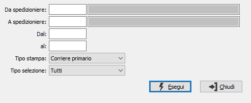

Lista spedizioni per corriere
Il programma effettua la stampa dell'elenco delle fatture accompagnatorie con trasporto a mezzo corriere, suddivise per corriere.

DA SPEDIZIONIERE: eventuale codice dello spedizioniere, da cui si vuole iniziare la selezione di analisi. Confermando a vuoto, la selezione inizia dal primo codice valido. Sul campo sono attive le funzioni di ricerca (F9).
A SPEDIZIONIERE: eventuale codice dello spedizioniere, con cui si vuole terminare la selezione di analisi. Confermando a vuoto, la selezione termina con l'ultimo codice valido. Sul campo sono attive le funzioni di ricerca (F9).
DAL: eventuale data del documento da cui deve iniziare l’analisi dei documenti relativamente ai precedenti parametri di selezione. Confermando a vuoto, l’analisi inizia con il primo documento valido.
AL: eventuale data del documento con cui si desidera terminare l’analisi dei documenti relativamente ai precedenti parametri di selezione. Confermando a vuoto, l’analisi si conclude con l'ultimo documento valido.
TIPO STAMPA: consente di decidere se analizzare lo spedizioniere primario o secondario.
TIPO SELEZIONE: consente di definire se analizzare le sole fatture, i soli DDT oppure entrambe le tipologie di documento.